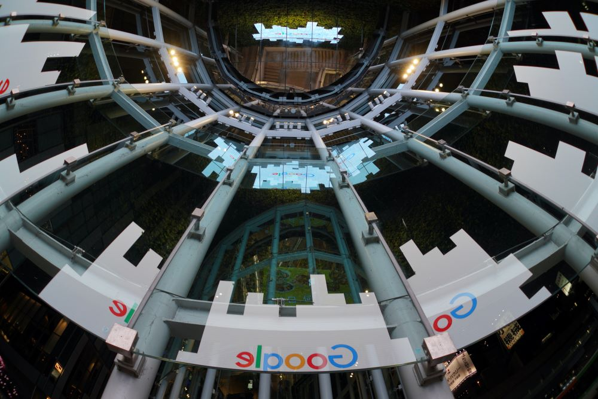

BLOGS

Why Pursuing a BSIT Degree is a Smart Choice for Your Career
07/04/23 4:25PM
Pursuing a BSIT degree can be a smart choice for your career. With high demand, potential for a high salary, career flexibility, and opportunities for innovation.
READ MORE

The Top Skills You'll Learn as a BSIT Student
07/04/23 9:12PM
By developing these skills and more, you'll be well-prepared for a successful career in information technology.
READ MORE

The Latest Trends and Innovations in BSIT
08/04/23 7:12PM
By staying up-to-date on these trends and innovations, you'll be well-prepared to tackle the challenges of a rapidly evolving field.
READ MORE
How to Choose the Right Specialization in BSIT
09/04/23 8:12AM
By carefully considering these factors, you can choose the right specialization in BSIT and set yourself up for a successful and fulfilling career.
READ MORE

Top Companies Hiring BSIT Graduates
11/04/23 11:12AM
By targeting your job search to these companies and others like them, you can increase your chances of landing a rewarding and high-paying job after graduation.
READ MORE